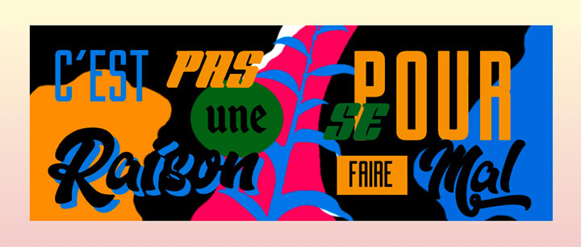

Pour cet exercice, vous devrez recréer en CSS une mise en page inspirée d’une murale thématique La guerre des tuques réalisée par l’artiste Marc Sirus.
Aperçu du résultat 👇

Matériel
Dossier de départ
Couleurs 🎨
#0c81e2
#e69f2b
#0a6827
#000000
Médias
Arrière-plan
Requis
Rendez-vous sur le site dafont.com, téléchargez et importez les polices: Gotham Nights, Secret Agent, Enchanted Land et Dopestyle dans votre projet.
Attribuez une taille de police de 100px à tous les textes de la page par défaut. Cette taille devra parfois être modifiée, mais elle vous donnera un point de départ plus simple.
Sans jamais modifier le HTML, ajustez les styles de chaque mot afin qu'il se rapproche le plus possible du mot correspondant dans le gabarit en arrière-plan.
Lorsque chaque mot est correctement ajusté, remplacez l'image de gabarit (template.png), par l'image d'arrière-plan fournise.
Notes de cours 📚
Text
align, decoration, transform, stroke, shadow
Position
static, relative, absolute, fixed, sticky